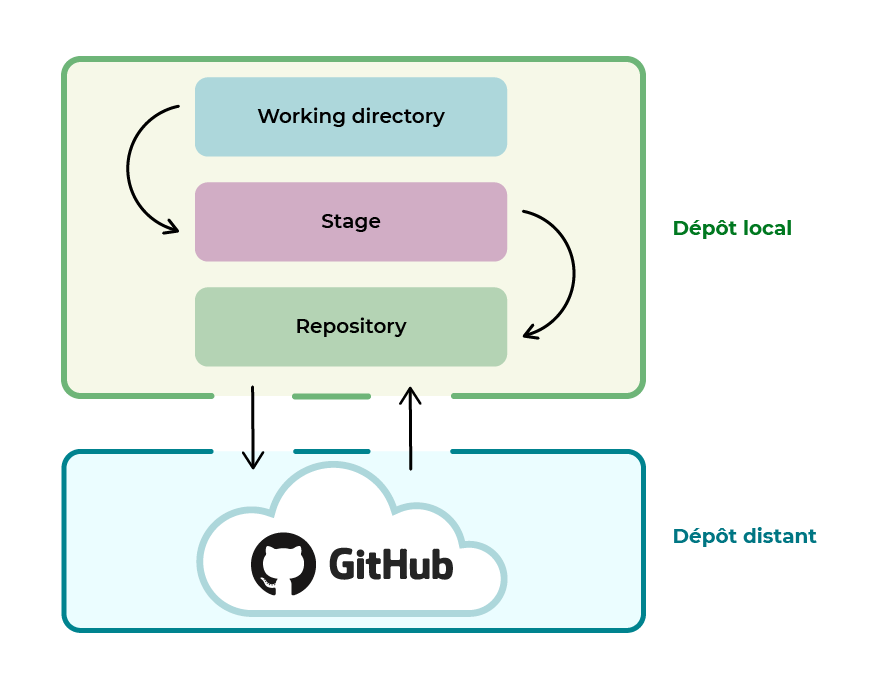

Git et Github !
Intro à Git et Github !
Contrôle de Version :
- Contrôle, conserve un historique des modifications pour revenir en arrière le cas échéant
- versioning qui va déterminer
- les modifications de chaques fichiers
- Pourquoi elle a lieu
- et par qui
Git/GitHub
Différence dépôt local/ Dépôt distant
Dépôt : dossier qui conserve un historique des versions et des modifications d’un projet. Il peut être local ou distant.
Requesitory in english !
- Dépôt local : entrepôt virtuel de votre projet. Il vous permet d'enregistrer les versions de votre code et d'y accéder au besoin.
On réalise une version, que l'on va petit à petit améliorer. Ces versions sont stockées au fur et à mesure dans le dépôt local.
- Dépôt distant : Il permet de stocker les différentes versions de votre code afin de garder un historique délocalisé, c'est-à-dire un historique hébergé sur Internet ou sur un réseau.
Travailler sur un dépôt local

- Working directory : dossier du projet sur votre ordinateur.
- Stage ou index : intermédiaire entre le working directory et le repository. Elle représente tous les fichiers modifiés que vous souhaitez voir apparaître dans votre prochaine version de code.
- Repository : Lorsque l’on crée de nouvelles versions d’un projet, c’est dans cette zone qu’elles sont stockées.
Initialiser git :
Configurer son id
$ git config --global user.name "John Doe"
$ git config --global user.email johndoe@example.com
configurer les couleurs :
$ git config --global color.diff auto
$ git config --global color.status auto
$ git config --global color.branch auto
configurer l'éditeur :
$ git config --global core.editor notepad++
$ git config --global merge.tool vimdiff
Créer le dépôt local :
johndoe ~(premiere ligne gitBash sans considérer une entrée sur le terminal)
$ cd Documents/PremierProjet
johndoe ~/Documents/PremierProjet
$ git init
Initialized empty Git repository in c:/users/JohnDoe/Documents/PremierProjet/
Initialiser un dépôt :
c:/users/JohnDoe/Documents/PremierProjet/ = Notre dossier destination quand nous entrons la commande
pwd !
Pour indexer des fichiers créent à cette occasion, dans notre dossier, nous pouvons utiliser les lignes suivantes ;
$ git add index.html styles.css
Créer une nouvelle version avec la commande git commit :
Pour archiver, nous entrons la commande :
git commit -m “Ajout des fichiers html et css de base” (m commme message..).=>
Vos modifications sont maintenant enregistrées avec la description “Ajout des fichiers html et css de base”.
Maintenant que nous avons créer notre Requesitory, nous allons l'importer sur gitHub...
Pour se faire, nous pouvons aller sur GitHub => Your Requesitory, aller sur le requesitory demandé, copier le lien et rentrer dans Bash la commande suivante :
git remote add origin https://github.com/EtudiantOC/OpenclassroomsProject.git
git branch -M main
git push -u origin main
Systèmes de branches
Modifications sans affecter le projet :
3 Phases de gestion de versions :
- Untracked : On peut aborder des modifications en modifiant du code
- Staging : On choisit ce que l'on veut intégrer
- Commit : On enregistre officiellement dans le dépôt local pour toujours
Pour visionner nos différentes branches, nous entrons la commande :
$ git branch
on va créer une brance par complémentarité :
$git branch cagnotte /!\Créer la branche cagnotte...
pour basculer sur la branche cagnotte :
$ git checkout cagnotte
$ git branch /!\Va mettre la branche principale (⭐ sur cagnotte)
on créer un fichiet cagnotte.txt :
$ touch cagnotte.txt
$git add cagnotte.txt
$ git commit -m "Réalisation de la partie cagnotte côté front end"
On a créer une nouvelle version de notre projet dans le dossier cagnotte.
$git push -u origin cagnotte /!\Cette commandene marche pas, on passe sur Udemy.....